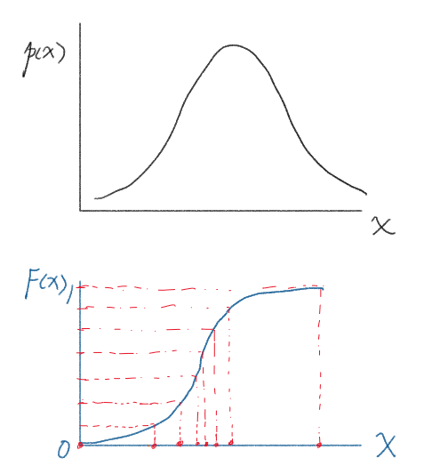
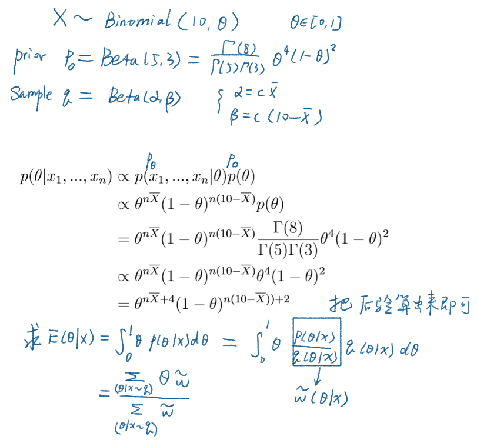
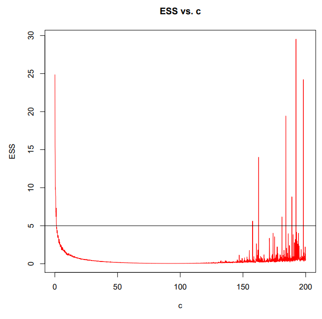

采样
求期望原本是个数学推导的过程。如果数学不好，推不出答案；或者问题压根没有闭式解，怎么样才能得到一个近似的结果呢？采样就可以做到。
采样，即人为地产生一些数据，使之服从目标分布。最简单的，如果想产生均匀分布，之间 rand() % MAXSIZE 就均匀地产生了 [0, MAXSIZE) 的随机数。
如果现在有一个任意的概率密度 $p(x)$，那怎么采样呢？比较一般的想法是，先求出 CDF，即积分得到分布函数 $F(x)$。它的值域一定在 $[0, 1]$。那我们从值域上均匀采样，再通过反函数求到对应的 $x=F^{-1}(y)$，也就能成功采样了。

学会了采样，求 $\mathbb{E}[f(x)]$ 就更加简单了：
即采样出服从 $p$ 的 $N$ 个 $x$，计算相应的 $f(x)$，再求平均。根据大数定理，平均值就是期望。
重要性采样
刚才的采样有一个非常重要的前提条件，那就是 CDF 可求，且可逆。如果遇到不会积分，分段函数，或者奇奇怪怪的情况，都会使得原来的做法太困难。
因此我们假设有一个我们易于掌控的概率函数 $q(x)$，它的 CDF 可求，且可逆，将原式化成：
其中$w(x)=\frac{p(x)}{q(x)}$。即采样出服从 $q$ 的 $N$ 个 $x$，计算相应的 $w(x)f(x)$，再求平均。
根据大数定理，平均值就是期望。
贝叶斯推理
在机器学习中，如果可以求出参数的期望，那么训练也就完成了。
由于
我们通过 $p(X|\theta) p(\theta)$ 计算得到的 $p’$ 积分不为 1，而是一个难以计算的常数。真正的后验是$p$。设 $C = \int_{\theta} p’ d\theta$，$p=p’/C$ 。
再通过重要性采样时，$\tilde w={p’\over q}=C{p\over q}$，一般地我们可以改写上面重要性采样的公式：
C 同样可以采样得到：
因此
回到贝叶斯
$p(X|\theta)$ 是模型假设；$p(\theta)$ 和 $q(\theta)$ 是形式相同的两个分布。$q$ 可能会根据输入数据的特性来调整。
参见下面的例子：

避免溢出下界
可以先求对数，等需要的时候再算指数。
另一方面，在求平均数之前，势必已经算出了各个数字。如果每个数字都除掉了最大数，那么在最后的式子里不受影响。
q 的选取
$q$ 在 $p$ 高密度的地方也要尽量高密度，这样才能真实还原数据的性质。
我看的几个 exerise 里面 $q$ 都取和先验一样的形式。一般以 ESS 来衡量其稳定性：
当 $q$ 本身的方差在合理的范围内，ESS 才会比较小。下图 c 衡量了方差。
